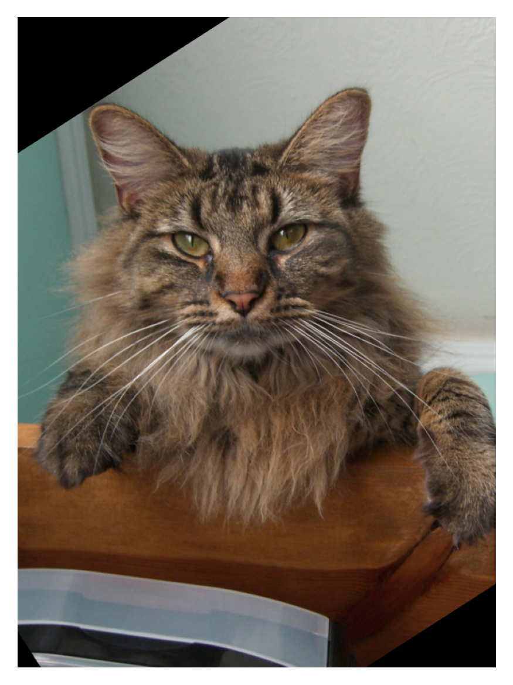
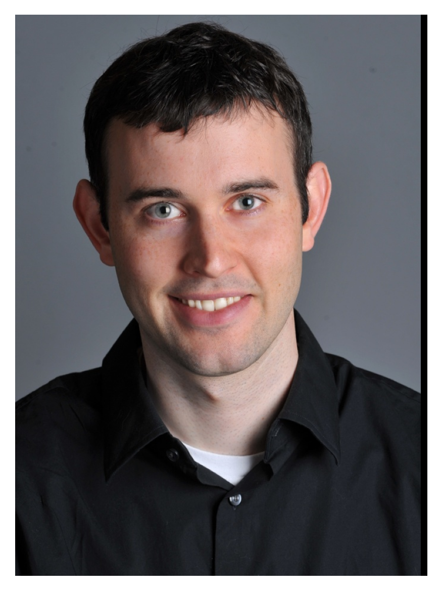
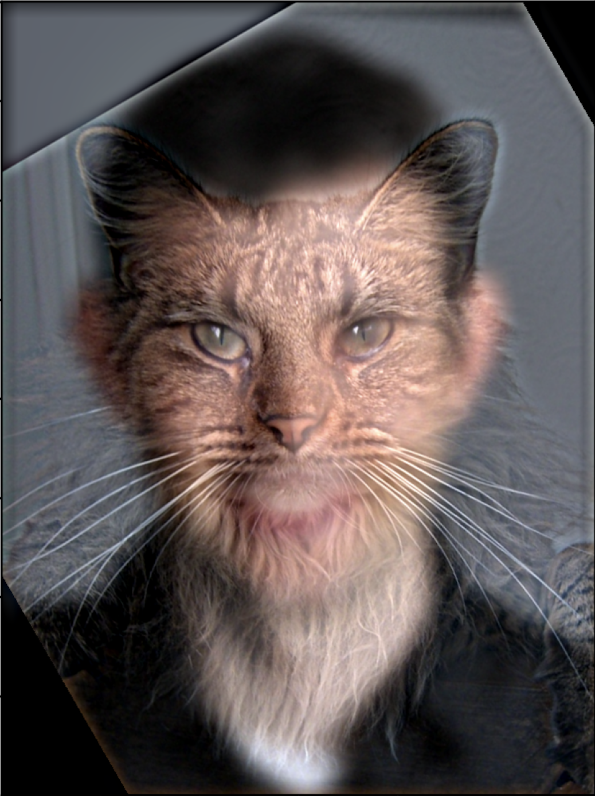
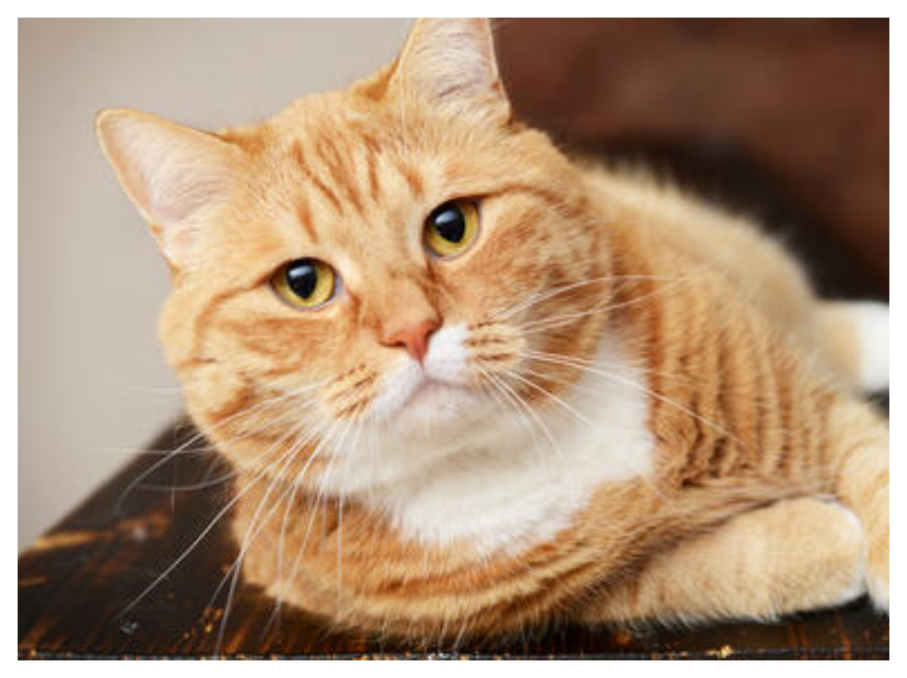
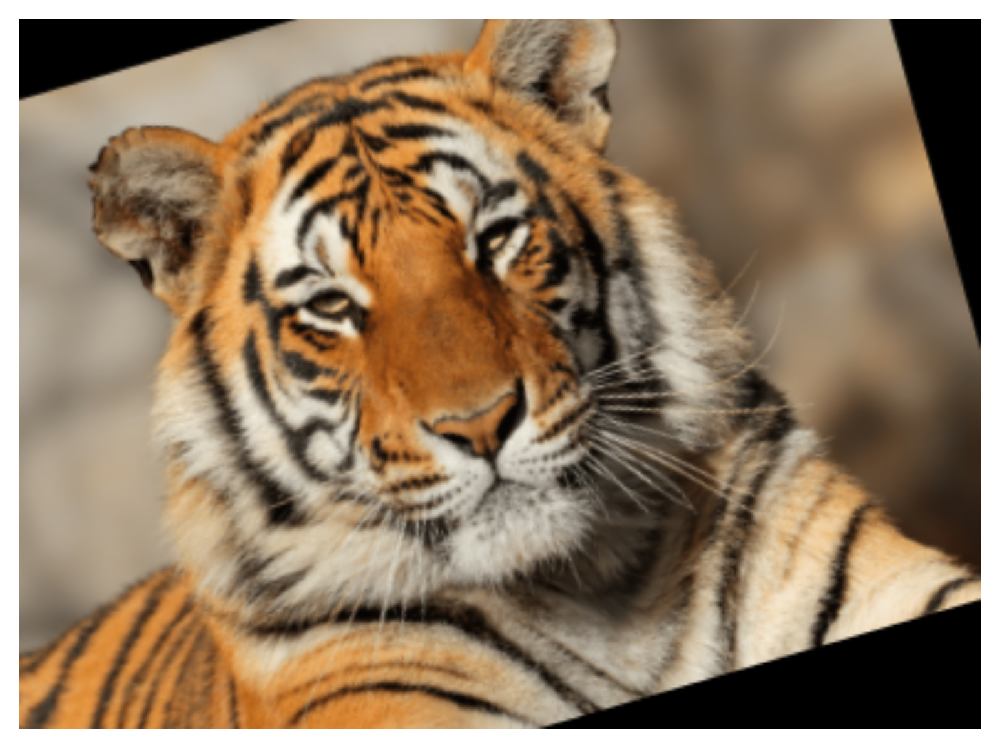
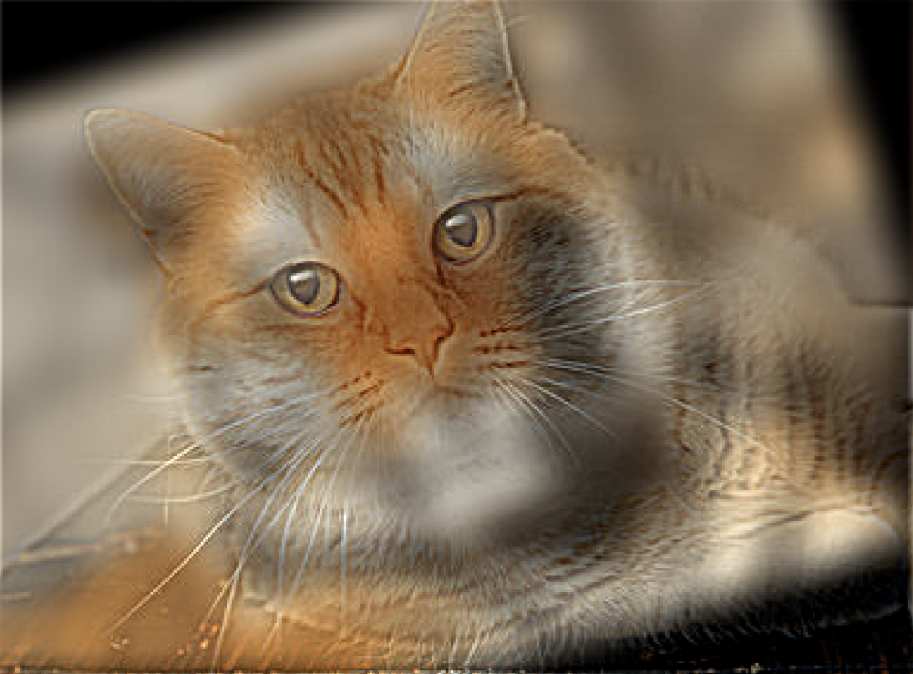
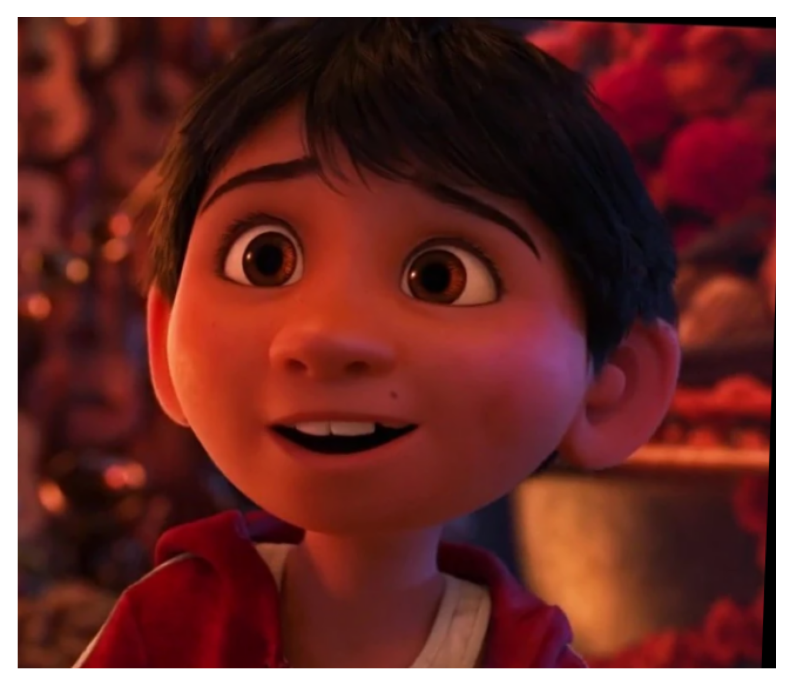
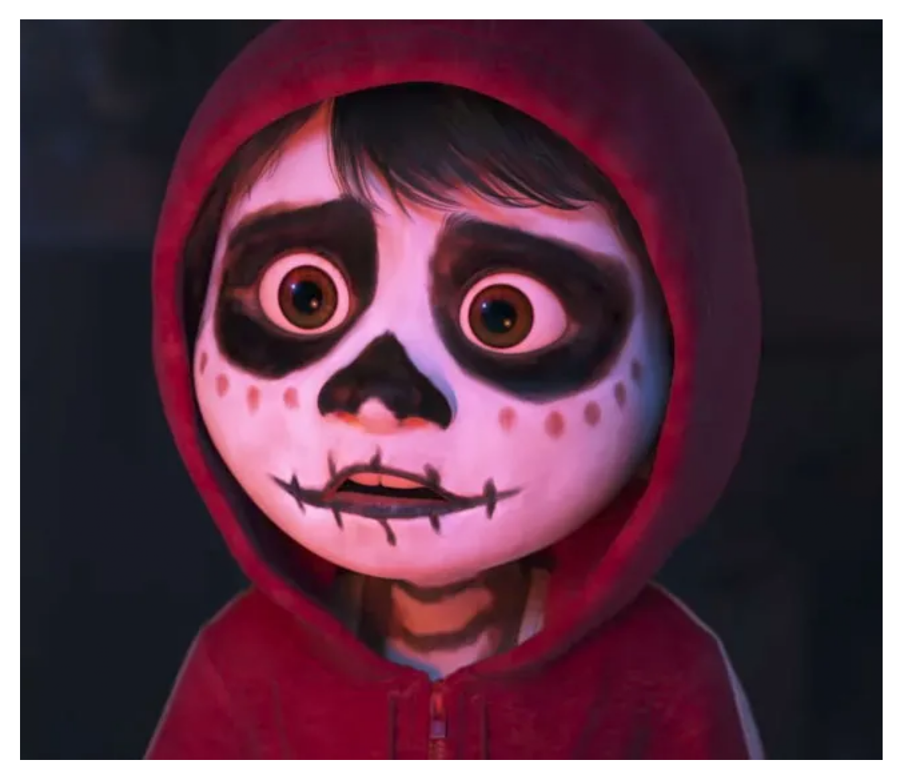
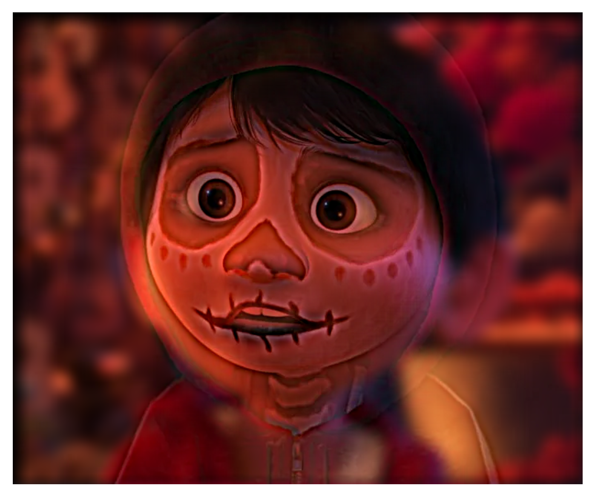

This project explores various image processing techniques that manipulate both spatial and frequency domains to achieve different visual effects and enhancements.
The image is first convolved with finite difference operators, Dx and Dy, to derive the gradients in the horizontal and vertical directions, respectively. The finite difference operators used for gradient calculation are defined as follows:
Dx = [1 -1], which computes the horizontal gradient, and Dy = [1, -1]T, which computes the vertical gradient.
The gradient magnitude is computed using the equation:
Gradient Magnitude = sqrt(Gx2 + Gy2)
This magnitude is then binarized using a threshold of 0.2 to highlight edges, producing a binary image that delineates edges clearly.
In this section, to mitigate the noise associated with using just the finite difference operators, Dx and Dy, I used a Gaussian filter, G.
This filter was applied to the original image to create a blurred version by convolving it with a Gaussian kernel. The kernel was generated using OpenCV's cv2.getGaussianKernel() function,
which produces a 1D Gaussian kernel. The 2D Gaussian kernel required for image processing was then formed by taking the outer product of this 1D kernel with its transpose. Following the application of the Gaussian filter,
I repeated the edge detection process by convolving the blurred image with Dx and Dy. The results were notably different from the initial approach. The edges detected in
the blurred image were less noisy, for example the noises in the lower section foreground were removed after using Gaussian Filter. In addition, the edges detected are wider.
I simplified the edge detection process by creating a Derivative of Gaussian (DoG) filter, which involves convolving a Gaussian filter with both Dx and Dy. This approach combines smoothing and differentiation into one step. After applying this composite filter to the image, the resulted edge image looks very similar to the previous edge image in which smoothing and edge detection were done separately.
To sharpen an image, I started with a Gaussian filter to create a blurred version of the original image. This filter acted as a low pass filter, capturing only the low frequencies. Then, by subtracting this blurred version from the original, I isolated the high frequencies that define sharper details. Enhancing an image by adding these high frequencies back can make it appear sharper. This entire process is combined into a single convolution operation known as the unsharp mask filter. By convovling the unsharp mask filter with the image will result in a sharpened image. The sharpening filter equation used in the function is defined as:
sharpenfilter = (1 + α) * unitimpulse - α * G
where α is the sharpening factor, unitimpulse is the identity matrix with a value of 1 at its center, and G is the Gaussian kernel calculated as a @ aT.
The effect of this technique is demonstrated on several images:
An image is blurred first with a Gaussian filter, then the sharpening filter is applied. While most edges were sharpened such as the shapes of the architecture and the mountains, the sharpening filter was not able to restore the details that were smoothed out by the Gaussian filter such as the tourists at left corner, the textures of the walls of the architecture and also the curvatures from the trees and rocks on the mountains.
Hybrid images are created using the approach described in the SIGGRAPH 2006 paper by Oliva, Torralba, and Schyns. To create hybrid images, I first apply Gaussian filters to two different images. One image is filtered to retain only its low-frequency components to capture its broader and more generalized features through smoothing. For the second image, on the opposite, the filtered result is subtracted from the original to isolate its high-frequency components, which include finer details and textures.
These two processed images—one highlighting broad features and the other emphasizing details—are then combined. The result is a hybrid image that merges the smooth, generalized appearance of one image with the detailed texture of another. This combination allows for varied interpretations at different viewing distances, creating a visually engaging effect.
Fourier analysis is used to transform the images into the frequency domain. The Fourier transform of an image decomposes it into its constituent frequencies, which are represented as a spectrum of amplitudes and phases. The frequency domain representation of an image is useful for analyzing and manipulating its content based on the spatial frequencies present. The magnitude of the Fourier transform indicates the strength of different frequencies which are displayed below.
Lower frequencies substracted from the man’s image, and higher frequencies are filtered out from the cat’s image. These processed images show clear effects of filtering in their frequency domains: high frequencies are prominent in the cat image, and low frequencies dominate the man’s image. The hybrid image is formed by combining these high and low-frequency components, effectively merging the detailed textures of the cat with the general features of the man. This results in a composite image that blends both types of features, visible differently at various viewing distances.
Using color for both low and high-frequency components enhances the blending of hybrid images. Coloring high frequencies accentuates details and textures, making them more vivid and noticeable. For example, the nose and mouth area of the cat are more visible and detailed more the colored image was used. In contrast, applying color to low frequencies can help to set the background tone and also help to differentiate larger general regions through different colors. For example, by using color, I can better visual the man from a distance apart as his skin tone is very different from the background when the colored image is used.
Blending Derek and the Cat
  Blending Tiger and Cat
  For blending Miguel and Miguel in the Land of the Dead, the result is not optimal. I obtained the higher frequency details from the Miguel in the Land of the Dead and the lower frequency details from the normal Miguel. However, the Miguel in the Land of the Dead remains very visible even when viewed from a distance. This visibility issue can be attributed to the overlap in the frequency ranges of the two images. When high and low frequencies from two different images overlap substantially, it can prevent the low frequencies from sufficiently masking the high frequencies in the hybrid image. In addition, if the intensity or contrast of the high-frequency image is strong, it can dominate the blend, making it harder for the viewer's eye to focus on the smoother, broader features intended to be highlighted by the low-frequency components.
Blending Miguel from COCO (Failed)
  The multiresolution Blending described in paper by Burt and Adelson is implemented in this section.
I started by creating a Gaussian stack for each image, which involves repeatedly applying a Gaussian filter to the image multiple times, thus capturing various levels of detail from coarse to fine. Each level of the Gaussian stack represents the image at a different resolution, gradually becoming more blurred. Next, I constructed a Laplacian stack from the Gaussian stack, where each level is derived by subtracting the next, finer level from the current level. This process captures the difference between successive Gaussian blurs, isolating unique features at each scale. Finally, these Laplacian stacks are combined across corresponding levels to blend the two images with a mas , taking advantage of the distinct details preserved at each resolution, resulting in a seamlessly blended final image that incorporates elements from both source images.
The formula for this blending at each level is: hybrid = img_1_laplacian_stack[c][i] * mask_gaussian[i] + img_2_laplacian_stack[c][i] * (1 - mask_gaussian[i]) where c represents each color channel and i represents each level for the Gaussian/Laplacian stack.
To seamlessly combine two images, I also applied a Gaussian filter to blur the mask used in the blending process. This approach involves creating a Gaussian stack for the mask, similar to the stacks created for the two input images. By blurring the mask, the transitions between the different image areas covered by the mask become smoother. This method helps in avoiding harsh, visible lines or abrupt transitions between the images.